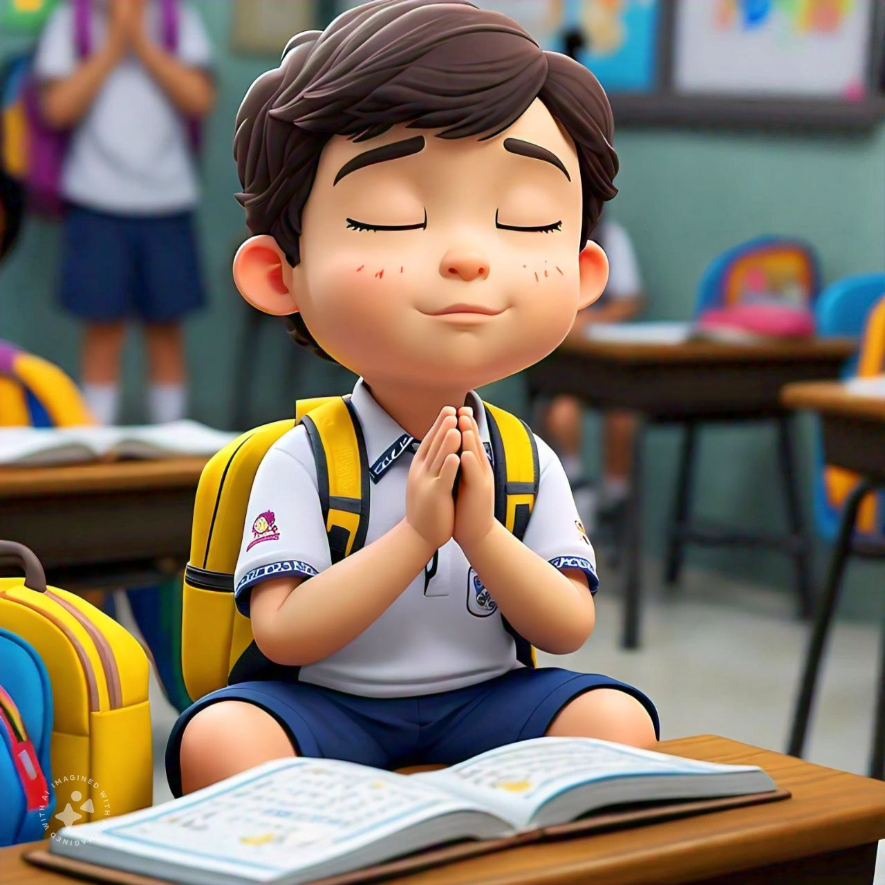
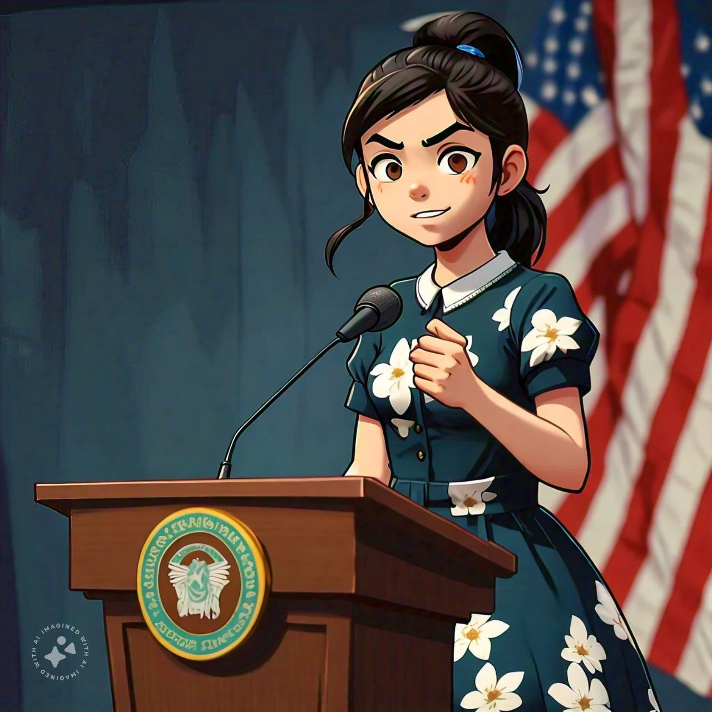

1) Core Subjects: The curriculum includes English, Hindi, Math, Environmental Studies, Moral Values, Art and Craft, General Knowledge, and Computer Literacy Programme. 2) Morning Assemblies: Daily assemblies to foster a sense of community and routine. 3) Clubs and Labs: English Club, Math Club, and Computer Laboratories to enhance subject-specific skills. 4) Creative Activities: Handicraft, Puppet Making, Painting, Sketching, and Paper Folding to encourage creativity.

5) Cultural Arts: Rangoli & Floral Designing to explore cultural expressions. 6) Sports: Both indoor and outdoor games to promote physical fitness. 7) Storytelling and Debates: Storytelling sessions and Debate Club to develop communication skills. 8) Events and Competitions: Annual Concert, Social Science and Science Exhibitions, Child Fair with Parents, Sports Day, Olympiads, Special Assemblies, and various competitions to showcase talents and creativity.